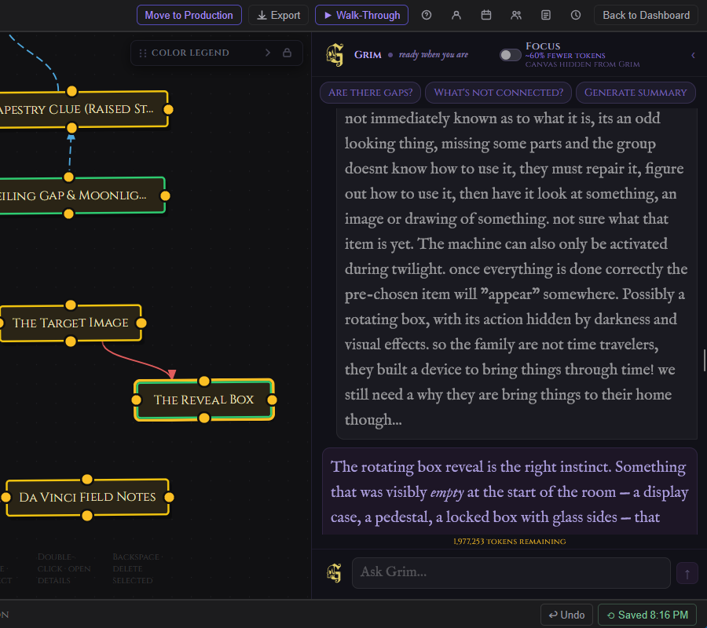
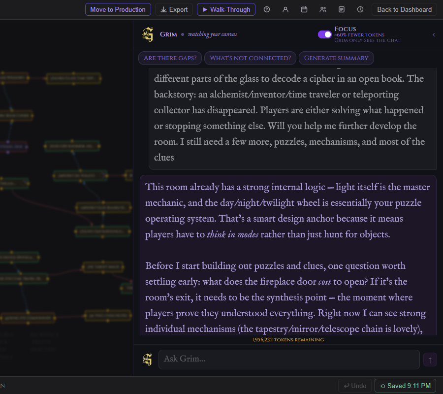

Grim
Grim is the AI collaborator built into every GrimFolio project. He lives in the right panel in Stage 1 and Stage 2, and inside the Grim widget in Stage 3. He reads your project at the start of every turn and responds as someone who has been paying attention the whole time. Grim is not a general AI assistant. He knows what you are building, what is on the canvas, what is in the pile, and what connections exist. He acts from that context, not from a blank slate.

Access and Tokens
Grim is a paid feature.
| Plan | Monthly token allowance |
|---|---|
| Free | None |
| Base Unlimited | None |
| Pro | 500,000 tokens per month |
| Studio | 2,000,000 tokens per month |
Token allowances reset on the first of each month. When the monthly allowance runs out Grim becomes unavailable until the next reset. Additional tokens can be purchased in packs via Account Settings → Plan and Billing. Purchased tokens do not expire and are spent after the monthly allowance is exhausted.
What Grim Reads
At the start of every turn Grim receives a structured snapshot of your project:
- Project name, current stage, and template type
- Canvas cards: title, type, status, number of connections, notes (up to 300 characters), elements, checklist completion, budget lines, and inventory assignments
- Pile items: title, type, and notes (up to 200 characters) for all unplaced cards
- Connections: all edges with their path labels
Grim never receives file contents directly. Reference documents are chunked, embedded, and retrieved semantically — only the portions most relevant to your current message are injected into context. For full details see the Reference Documents page.
How Grim Opens a Conversation
The first time you start a conversation on a project Grim responds based on what it finds.
If autostart is enabled (on by default) Grim skips the pleasantries and creates 3 starter cards immediately. It ends with "Placed: [title 1], [title 2], [title 3]." This is the fastest path from a blank project to something in the pile.
If reference documents are attached Grim reads them and leads with something specific from the content — a named character, a faction with an agenda, a location with an unusual property. The opening observation makes it unmistakably clear Grim has read the material.
If the project already has cards Grim opens with an observation about the current state, not a recap. Something that creates forward momentum.
Grim never opens with a greeting or introduction. It opens as though it has been in the room the whole time.
What Grim Can Do — Stage 2
Grim acts on your project through structured actions embedded in its responses. The actions save data to the project automatically. If Grim confirms something in prose without an action block nothing is saved.

| Action | What it does |
|---|---|
| Create cards | Adds cards to the Pile Drawer with title, type, and notes. |
| Append to notes | Adds content to an existing card's notes without overwriting. |
| Replace notes | Rewrites a card's notes from scratch. |
| Add elements | Adds items to a card's Elements list. |
| Create checklist | Adds checklist items to a canvas card. |
| Create budget lines | Adds budget line items with estimated costs to a canvas card. |
| Suggest connections | Proposes connections between existing canvas cards. Requires your approval before anything is drawn. |
Grim does not delete cards, connections, or any project data.
After every create action Grim ends with a single confirmation line: "Placed: [title 1], [title 2]..." for cards, or a brief count for checklist and budget additions.
What Grim Can Do — Stage 3
Production Grim is a separate conversation with a different focus. It does not have access to the canvas graph or Stage 2 Grim history. Its context is your current production state — visible card titles, types, and checklist completion.
Production Grim is advisory only. It does not create cards, connections, or any project data. It responds in plain text.
Three quick prompts are available in the Production Grim widget:
| Prompt | What it asks |
|---|---|
| Run final check | Highest-priority gaps before the project opens. |
| What's not done? | Pulls all incomplete checklist items and asks for prioritization. |
| Generate summary | Writes a short production status read: state, risks, what remains. |
For full Production Grim documentation see the Stage 3 page.
Conversation History
Grim remembers every conversation within a project. Messages persist in the database. When you return to a project the conversation continues exactly where it left off.
As conversations grow long a background summary compresses older context. Grim always sees the last 10 messages in full plus a summary of everything before them. Background summarization runs silently without interrupting the conversation.
Focus Mode Pro
A Focus toggle appears in the Grim header on Pro plans in Stage 2.

When Focus is on the canvas and pile are hidden from Grim's context. Grim only sees the current chat. This uses roughly 60% fewer tokens per turn.
Focus mode is not available in Stage 3. The Production context is already minimal by design.
The Grim Panel
The Grim panel lives on the right side of the screen in Stages 1 and 2.
Resizing — Drag the left edge of the panel to make it narrower (minimum 220px) or wider (up to half the viewport on desktop).
Collapsing — Click ‹ in the panel header to collapse. The panel shrinks to a narrow rail showing the Grim avatar. Click the rail to expand again. A dot appears on the collapsed rail when there are new messages you have not seen.
Status dot — A small indicator in the panel header shows Grim's current state.
| State | What it means |
|---|---|
| Waking | Grim is initializing. |
| Ready | Rotating messages: "here to help," "watching your canvas," "ready when you are," "thinking about your design." |
| Thinking | "on it..." — a response is in progress. |
| Degraded | "AI backbone slow — Anthropic capacity." |
| Down | "AI backbone down — Anthropic outage." |
Viewer mode — Viewers do not see the Grim chat. Instead the panel shows the project's generated summary (if one exists) under a Project Summary header.
Appearance Settings
Three Grim-specific appearance settings live in Account Settings → Appearance.
| Setting | Options |
|---|---|
| Grim Chat Font Size | Small, Medium, Large, Huge |
| Display Font Size | Small, Large, Huge |
| Grim Avatar | Default G mark, or Gold G mark (Founder accounts only) |
Font size and avatar apply to both Stage 2 and Stage 3 Grim.
Working Effectively with Grim
Grim acts first and invites reaction after. It does not ask for names, confirmation, or details before creating. If a request is vague Grim makes a creative choice and executes it. Tell it what you want changed or refined afterward.
A few things that work well:
- Ask Grim to populate a card's checklist or budget after you have placed it on the canvas. Grim cannot act on pile cards for those operations.
- When Grim suggests connections it lists its reasoning. Review the proposals and approve or dismiss them. Nothing is drawn until you confirm.
- Attach reference documents before starting the conversation if you want Grim to draw from them from message one.
- Use Focus mode when having a planning conversation that does not need Grim to read the whole project state.
- In Stage 3 use the quick prompts. "What's not done?" reads your live checklist data and asks Grim to prioritize it without you needing to type anything.